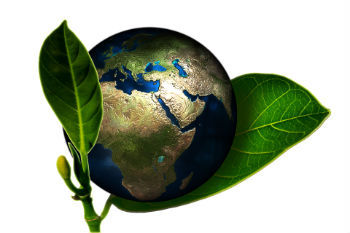
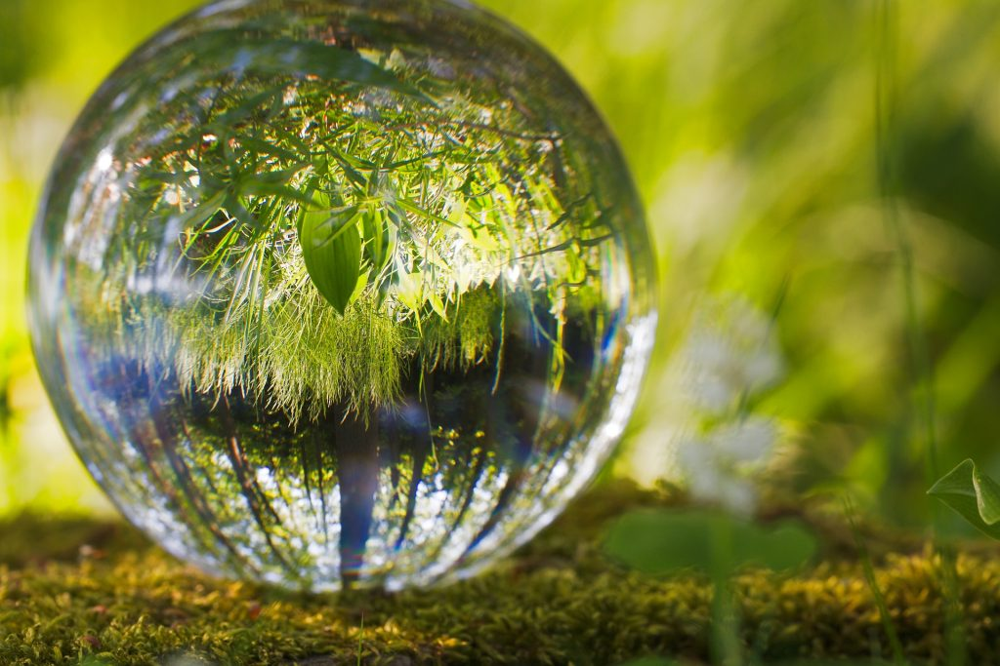
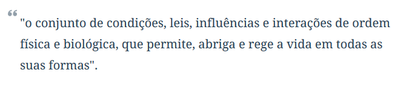
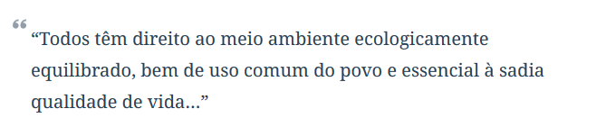

Meio Ambiente
O meio ambiente é o local onde se desenvolve a vida na terra, ou seja, é a natureza com todos os seres vivos e não vivos que nela habitam e interagem. Em resumo, o meio ambiente engloba todos os elementos vivos e não-vivos que estão relacionados com a vida na Terra. É tudo aquilo que nos cerca, como a água, o solo, a vegetação, o clima, os animais, os seres humanos, dentre outros.

Preservação Ambiental
A preservação do meio ambiente faz parte dos temas transversais presentes nos Parâmetros Curriculares Nacionais (PCN's). O seu objetivo é incitar nos estudantes a importância de preservar o meio ambiente e os problemas causados pela intervenção humana na natureza.
Qual a diferença entre Preservação e Conservação Ambiental?
Os termos preservação e conservação ambiental são constantemente confundidos. Porém, cada um deles possui um significado e objetivos diferentes.
Meio Ambiente e Sustentabilidade
Atualmente, as questões ambientais envolvem a sustentabilidade. A sustentabilidade é um termo abrangente, que envolve também o planejamento da educação, economia e cultura para organização de uma sociedade forte, saudável e justa. A sustentabilidade econômica, social e ambiental é um dos grandes desafios da humanidade.
O termo sustentabilidade surge da necessidade de aliar o crescimento econômico com a preservação ambiental. A essa nova forma de desenvolvimento, damos o nome de desenvolvimento sustentável. Ele tem como conceito clássico ser aquele que atende às necessidades do presente sem comprometer a possibilidade das gerações futuras atenderem as suas próprias necessidades. Para que o desenvolvimento sustentável seja uma realidade é necessário o envolvimento de todas as pessoas e nações do planeta. As ações vão desde atitudes individuais até acordos internacionais.
Meio Ambiente no Brasil

No Brasil, a Política Nacional do Meio Ambiente, Lei nº 6.938, de 31 de Agosto de 1981, define os instrumentos para proteção do meio ambiente. É considerada o marco inicial das ações para conservação ambiental no Brasil. Através dela, o meio ambiente é definido como: 
A Política Nacional do Meio Ambiente tem como objetivo a preservação, melhoria e recuperação da qualidade ambiental propícia à vida. Também visa assegurar condições ao desenvolvimento socioeconômico, aos interesses da segurança nacional e à proteção da dignidade da vida humana. A Constituição Federal Brasileira também possui um artigo que trata exclusivamente do Meio Ambiente. O artigo 225 cita que: 
Problemas Ambientais
Nas últimas décadas, o meio ambiente vem sofrendo cada vez mais com a ação humana, uma delas é a prática da queimada. Como essa intervenção nem sempre é harmônica e de forma sustentável, surgem os problemas ambientais.
Os principais problemas ambientais da atualidade são:
- Mudanças Climáticas
- Efeito Estufa
- Aquecimento Global
- Poluição da água
- Poluição do ar
- Ozônio
- Extinção de espécies
- Chuva Ácida
- Desflorestação
- Desertificação
- Poluição
Conceitos Relacionados ao Meio Ambiente